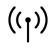
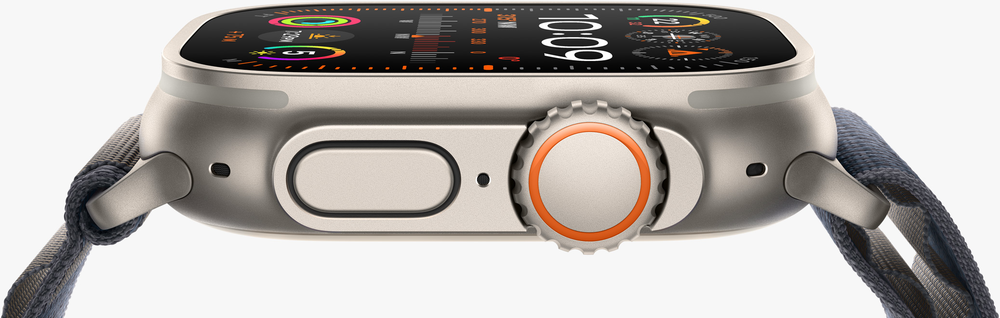
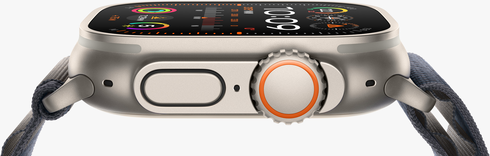

49 mm titanium case size
Carbon-neutral combinations available
1
Always-On Retina display • Up to 3,000 nits
S9
S9 SiP • Double tap gesture • Faster on-device Siri
^
Precision Finding for iPhone
2
Blood Oxygen app
3 • ECG app
4
Heart rate & rhythm notifications
5
Temperature sensing
6
Cycle Tracking with retrospective ovulation estimates
7
SOS
Emergency SOS
8 • Fall & Crash Detection
8
International Emergency Calling
9 • Siren
100m
Water resistant • Swimproof
15
High-speed water sports • Recreational dive (40 m)

Precision dual-frequency GPS • Cellular connectivity
7
Up to 36 hours
16 • Up to 72 hours (Low Power Mode)
16
Fast charging
17
 
